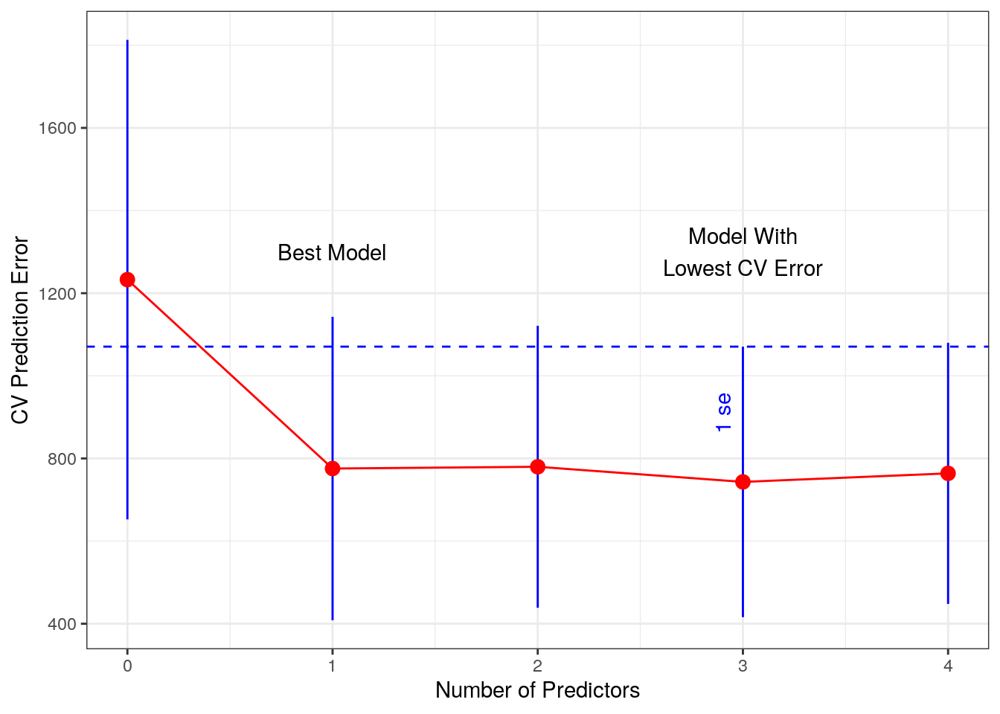
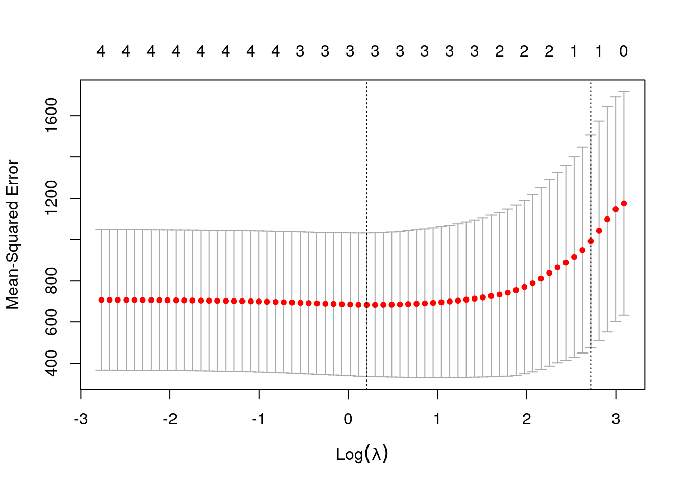

8 Model Selection
This chapter presents methods for finding a balance between under fitting and over fitting a model. Under fitting is when the model is a poor predictor of the response. With linear regression, this is largely addressed through diagnostic checks, which was covered in previous chapters. A linear model is over fitted when it includes more predictors than are needed to represent the relationship to the response variable. Appropriately reducing the complexity of the model improves its ability to make predictions based on new data, and it helps with interpretability.
8.1 Admin
For any errors associated with this section, please contact John King.
This chapter was published using the following software:
- R version 3.6.0 (2019-04-26).
- On x86_64-pc-linux-gnu (64-bit) running Ubuntu 18.04.2 LTS.
- Packages used in this chapter are explicitly shown in the code snippets.
8.2 Introduction
There are three general approaches to reducing model complexity: dimension reduction, variable selection, and regularization. Dimension reduction is beyond the scope of this tutorial and will not be covered. This chapter presents two methods of variable selection (testing- and criterion-based methods) and regularization through lasso regression.
8.3 Testing-Based Methods
Testing-based methods are the easiest to implement but should only be considered when there are only a few predictors. The idea is simple. In forward elimination, we start with a linear model with no predictors, manually add them one at a time, and keep only those predictors with a low p-value. Backward elimination is just the opposite: we start with a linear model that contains all predictors (including interactions, if suspected), remove the predictor with the highest p-value, build a new linear model with the reduced set or predictors, and continue that process until only those predictors with low p-values remain.
We’ll use the teengamb dataset from the faraway package to demonstrate backward elimination. This dataset contains survey results from a study of teenage gambling in Britain. The response variable is gamble, which is the expenditure on gambling in pounds per year. The predictors are information regarding each survey respondent, such as gender and income.
## sex status income verbal gamble
## 1 1 51 2.00 8 0.0
## 2 1 28 2.50 8 0.0
## 3 1 37 2.00 6 0.0
## 4 1 28 7.00 4 7.3
## 5 1 65 2.00 8 19.6
## 6 1 61 3.47 6 0.1A linear model with all predictors is as follows (we’ll assume this model passes all of the required diagnostic checks):
##
## Call:
## lm(formula = gamble ~ ., data = teengamb)
##
## Residuals:
## Min 1Q Median 3Q Max
## -51.082 -11.320 -1.451 9.452 94.252
##
## Coefficients:
## Estimate Std. Error t value Pr(>|t|)
## (Intercept) 22.55565 17.19680 1.312 0.1968
## sex -22.11833 8.21111 -2.694 0.0101 *
## status 0.05223 0.28111 0.186 0.8535
## income 4.96198 1.02539 4.839 1.79e-05 ***
## verbal -2.95949 2.17215 -1.362 0.1803
## ---
## Signif. codes: 0 '***' 0.001 '**' 0.01 '*' 0.05 '.' 0.1 ' ' 1
##
## Residual standard error: 22.69 on 42 degrees of freedom
## Multiple R-squared: 0.5267, Adjusted R-squared: 0.4816
## F-statistic: 11.69 on 4 and 42 DF, p-value: 1.815e-06Since the p-value for status is the highest, we remove it first.
##
## Call:
## lm(formula = gamble ~ sex + income + verbal, data = teengamb)
##
## Residuals:
## Min 1Q Median 3Q Max
## -50.639 -11.765 -1.594 9.305 93.867
##
## Coefficients:
## Estimate Std. Error t value Pr(>|t|)
## (Intercept) 24.1390 14.7686 1.634 0.1095
## sex -22.9602 6.7706 -3.391 0.0015 **
## income 4.8981 0.9551 5.128 6.64e-06 ***
## verbal -2.7468 1.8253 -1.505 0.1397
## ---
## Signif. codes: 0 '***' 0.001 '**' 0.01 '*' 0.05 '.' 0.1 ' ' 1
##
## Residual standard error: 22.43 on 43 degrees of freedom
## Multiple R-squared: 0.5263, Adjusted R-squared: 0.4933
## F-statistic: 15.93 on 3 and 43 DF, p-value: 4.148e-07Then we remove verbal.
##
## Call:
## lm(formula = gamble ~ sex + income, data = teengamb)
##
## Residuals:
## Min 1Q Median 3Q Max
## -49.757 -11.649 0.844 8.659 100.243
##
## Coefficients:
## Estimate Std. Error t value Pr(>|t|)
## (Intercept) 4.041 6.394 0.632 0.53070
## sex -21.634 6.809 -3.177 0.00272 **
## income 5.172 0.951 5.438 2.24e-06 ***
## ---
## Signif. codes: 0 '***' 0.001 '**' 0.01 '*' 0.05 '.' 0.1 ' ' 1
##
## Residual standard error: 22.75 on 44 degrees of freedom
## Multiple R-squared: 0.5014, Adjusted R-squared: 0.4787
## F-statistic: 22.12 on 2 and 44 DF, p-value: 2.243e-07Notice that even though we eliminated half of the predictors from the model, we only slightly reduced the adjusted \(R^{2}\). The simpler model explains almost as much variance in the response with only half the number of predictors. Something to keep in mind when conducting forward or backward elimination is that the predictor p-value does not necessarily have to be above 0.05 to eliminate the predictor from the model. You could also choose something higher - even up to around 0.15 to 0.20 if predictive performance is the goal. For example, note that the p-value for verbal in the second model was 0.14, and the adjusted \(R^{2}\) for the model was the highest of the three. The coefficient for verbal was also negative, which is what we’d expect: teens with higher verbal scores spend less money on gambling. We should therefore consider keeping verbal in the model (there’s a little bit of an art to it).
8.4 Criterion-Based Methods
As previously stated, testing-based procedures should only be considered when there are just a few factors to consider. The more potential factors in your model, the greater the chance that you’ll miss the optimal combination. We saw in the previous section that we had two competing goals: model simplicity versus model fit. Akaike (1974) developed a method to measure this balance between simplicity and fit called the Akaike Information Criterion (AIC), which takes the form of:
where,
- \(p\) is the number of predictors, and
- \(\hat{L}\) is the maximized likelihood for the predictive model.
We then choose the model with the lowest AIC. The Bayes Information Criterion (BIC) is an alternative to AIC and replaces \(2(p+1)\) with \(ln(n)(p+1)\), where \(n\) is the number of observations (design points). Adding \(ln(n)\) increases the penalty for the number of factors in the model more for larger data sets. Which criterion you use can therefore depend on the dataset you’re working with.
Another common estimator of error is Mallow’s Cp, which is defined as:
where,
- \(RSS\) is the root sum of squares,
- \(p\) is the number of predictor, and
- \(\hat{\sigma}^{2}\) is an estimate of the variance of the error, \(\varepsilon\), in the linear regression equation.
As with AIC and BIC, the penalty term (in this case \(2p\hat{\sigma}^{2}\)) increases as the number of predictors in the model increases, which is intended to balance the corresponding decrease in \(RSS\). With each of these methods, as we vary \(p\), we get an associated criterion value from which we select the minimum as the best model. In R, we can calculate AIC and BIC with the bestglm() function from the bestglm package. Be aware that bestglm() expects the data to be in a dataframe with the response variable in the last column.
library(bestglm)
# Note that bestglm is picky about how your dataset is structured
# It expects a dataframe with the response variable in the last column
# and all other columns are predictors. Don't include any other "extra"
# columns. Fortunately, teengamb is already set up that way.
tg.AIC = bestglm(teengamb, IC="AIC")
# this will provide the best model
tg.AIC## AIC
## BICq equivalent for q in (0.672366796081496, 0.87054246206156)
## Best Model:
## Estimate Std. Error t value Pr(>|t|)
## (Intercept) 24.138972 14.7685884 1.634481 1.094591e-01
## sex -22.960220 6.7705747 -3.391177 1.502436e-03
## income 4.898090 0.9551179 5.128256 6.643750e-06
## verbal -2.746817 1.8252807 -1.504874 1.396672e-01Notice that verbal is included in the best fit model even though its p-value is > 0.05. Using summary(), we get a likelihood-ratio test for the best model compared to the null model.
## Fitting algorithm: AIC-leaps
## Best Model:
## df deviance
## Null Model 43 21641.54
## Full Model 46 45689.49
##
## likelihood-ratio test - GLM
##
## data: H0: Null Model vs. H1: Best Fit AIC-leaps
## X = 24048, df = 3, p-value < 2.2e-16To get the best model in a lm() format:
##
## Call:
## lm(formula = y ~ ., data = data.frame(Xy[, c(bestset[-1], FALSE),
## drop = FALSE], y = y))
##
## Coefficients:
## (Intercept) sex income verbal
## 24.139 -22.960 4.898 -2.747We can also see a comparison of the best model (model 1) to the next 4 best models.
## sex status income verbal Criterion
## 1 TRUE FALSE TRUE TRUE 294.2145
## 2 TRUE FALSE TRUE FALSE 294.6268
## 3 TRUE TRUE TRUE TRUE 296.1758
## 4 TRUE TRUE TRUE FALSE 296.2086
## 5 FALSE TRUE TRUE TRUE 301.6659We can also see the best model (row 3) and its subsets. Row 0 contains just the y-intercept, and in each successive row one predictor is added at a time.
## (Intercept) sex status income verbal logLikelihood AIC
## 0 TRUE FALSE FALSE FALSE FALSE -161.6677 323.3354
## 1 TRUE FALSE FALSE TRUE FALSE -150.1678 302.3356
## 2 TRUE TRUE FALSE TRUE FALSE -145.3134 294.6268
## 3* TRUE TRUE FALSE TRUE TRUE -144.1072 294.2145
## 4 TRUE TRUE TRUE TRUE TRUE -144.0879 296.1758Using BIC, however, verbal is excluded from the best fit model.
## BIC
## BICq equivalent for q in (0.0507226962510261, 0.672366796081496)
## Best Model:
## Estimate Std. Error t value Pr(>|t|)
## (Intercept) 4.040829 6.3943499 0.6319374 5.306977e-01
## sex -21.634391 6.8087973 -3.1774174 2.717320e-03
## income 5.171584 0.9510477 5.4377755 2.244878e-06For Mallow’s Cp, we can use the leaps package.
library(leaps)
# leaps expects x and y to be passed separately
tg.cp = leaps(x=teengamb[-5], y=teengamb$gamble, method="Cp")
tg.cp## $which
## 1 2 3 4
## 1 FALSE FALSE TRUE FALSE
## 1 TRUE FALSE FALSE FALSE
## 1 FALSE FALSE FALSE TRUE
## 1 FALSE TRUE FALSE FALSE
## 2 TRUE FALSE TRUE FALSE
## 2 FALSE TRUE TRUE FALSE
## 2 FALSE FALSE TRUE TRUE
## 2 TRUE TRUE FALSE FALSE
## 2 TRUE FALSE FALSE TRUE
## 2 FALSE TRUE FALSE TRUE
## 3 TRUE FALSE TRUE TRUE
## 3 TRUE TRUE TRUE FALSE
## 3 FALSE TRUE TRUE TRUE
## 3 TRUE TRUE FALSE TRUE
## 4 TRUE TRUE TRUE TRUE
##
## $label
## [1] "(Intercept)" "1" "2" "3" "4"
##
## $size
## [1] 2 2 2 2 3 3 3 3 3 3 4 4 4 4 5
##
## $Cp
## [1] 11.401283 30.984606 41.445676 45.517426 3.248323 12.003293 12.276400
## [8] 25.967108 26.743051 42.897591 3.034526 4.856329 10.256053 26.416920
## [15] 5.000000It takes a little finagling to get the predictors that we should include in the best model. Columns 1, 2, and 4 correspond to sex, status, and verbal, which is the same as the AIC result.
## 1 2 3 4
## TRUE FALSE TRUE TRUE8.5 Cross Validation
An alternative approach to using AIC, BIC, or Cp is to use cross validation (CV) to select the best model. The idea is that we randomly divide our data into a training set and a test set. An 80/20 split between the training set and test set is common but will depend on your sample size. For very large sample sizes (in the millions), the training set can contain a larger percentage, while for relatively small sample sizes, the split may be closer to 50/50. The training set is further randomly divided into \(k\) subsets (called folds), and one of these folds is withheld as the validation set. We fit a model to the remaining training set, and then measure the prediction error using the validation set. Typically, the prediction error is measured by the mean squared error (MSE) for a quantitative response variable. We repeat this process by cycling though each of the folds and holding it out as the validation set. The cross validated error (CV error) is then the average prediction error for the \(k\) folds.
The website for the scikit-learn module for Python has a good visualization (shown below) of these various data sets and a good explanation of this and other cross validation methods. A more thorough, academic treatment of cross validation may be found in Chapter 7.10 in Elements of Statistical Learning written by Trevor Hastie, Robert Tibshirani, and Jerome Friedman.

Once the CV process is complete, we re-combine each of the folds into a single training set for a final evaluation against the test set. With this approach, we can compare multiple CV methods and choose the method with the best performance.
Notice that we are not using an Information Criterion (IC) anywhere in this method. Another difference is that with criterion-based methods, we chose the model with the lowest IC score, but with CV, we don’t choose the model with the lowest CV error. Instead, we calculate the standard deviation (\(\sigma\)) of the CV error for each of the \(p\) predictors and then choose the smallest model that’s CV error is within one standard error of the lowest. Standard error is defined as \(se = \sigma/\sqrt(k)\). This is best shown graphically, which you’ll see below.
CV techniques are particularly useful for datasets with many predictors, but for consistency, we’ll stick with the teengamb dataset. Below, we’ll perform k-fold cross validation on the teamgamb dataset, once again using bestglm(). We’ll use an 80/20 train/test split.
set.seed(2)
test_set = sample(47, 10, replace=FALSE) # randomly select row indices
tg_test = teengamb[test_set, ] # create test set
tg_train = teengamb[-test_set, ] # create training set The training set has only 24 observations, so if we further partition it into a large number of folds, we’ll have a small number of observations in each of the validation folds. For this example, we’ll choose just 3 folds. In the bestglm() function, we specify CV as the IC and pass three arguments to specify cross validation parameters. As mentioned, there are a variety of cross validation methods to choose from. For the method described above, we specify Method="HTF", which you might have noticed are the first letters of the last names of the authors mentioned in the “Elements of Statistical Learning” reference above. K=3 specifies the number of k-folds, and we can chose one or more repetition with REP. Remember that cross validation randomly partitions the data into folds, so if we want to repeat the CV process with different random partitions, we increase the REP value. Due to the small sample size and number of folds, we’ll do 10 repetitions.
## CV(K = 3, REP = 10)
## BICq equivalent for q in (0.000199326484859652, 0.329344259543028)
## Best Model:
## Estimate Std. Error t value Pr(>|t|)
## (Intercept) -6.132874 6.892883 -0.8897401 3.796805e-01
## income 5.877955 1.149221 5.1147292 1.134028e-05The model above is the model with the fewest predictors that is within one standard error of the model with the lowest CV error. To illustrate this relationship, next we’ll visualize how this model was determined based on the CV and standard errors. We can get the CV errors and the \(se\) from the tg.cv object.

8.5.1 What About The Test Set?
This model selection method included income as the only predictor variable in their respective best model. However, the coefficients differ between the two models, so now we can bring in the test set to compare Best BIC model. For a fair comparison with the CV results, we’ll find the best model using BIC on the training set only.
# get the BIC model on the training set only
tg_train.BIC = bestglm(tg_train, IC="BIC")
bic_preds = predict(tg_train.BIC$BestModel, newdata = data.frame(tg_test[, -5]))
print("BIC predictors included are:")## [1] "BIC predictors included are:"## (Intercept) sex income
## 3.515245 -19.116151 5.362915Now we’ll get the CV model.
# based on the CV results, only income should be included as a factor
cv.glm = glm(gamble~income, data=tg_train)
cv_preds = predict(cv.glm, newdata = data.frame(tg_test[, -5]))We’ll use mean absolute error as our measure of error.
# calculate and compare mean absolute error
print(paste("BIC mean absolute error:", round(mean(abs(bic_preds - tg_test$gamble)), 1)))## [1] "BIC mean absolute error: 10.9"## [1] "CV mean absolute error: 16.3"Using mean absolute error, BIC out-performed the cross-validated model. This result shouldn’t be too surprising given that the BIC model contained additional predictor variables that appeared to be statistically significant.
8.6 Lasso Regression
Ridge and lasso regression are closely related regularization techniques to reduce model complexity. The primary difference between the two methods is that ridge regression reduces factor coefficients close to (but not equal to) zero, while lasso regression reduces the coefficients all the way to zero, which makes it useful for reducing model complexity by eliminating factors.
8.6.1 Background Reading
For the theoretical framework, please read this article. Don’t worry about the Python code. Just read the text portions of the article that explain the how ridge and, more importantly, lasso regression work.
8.6.2 Lasso Regression In R
Lasso regression is particularly useful when a dataset has many factors, but we’ll continue to use the teengamb data so we can compare the results with the stepAIC() method. Performing lasso regression with the glmnet package is straight forward. The function has two required arguments, an x and a y, where x are the data associated with the predictors (note x must be a data.matrix, not a data.frame), and y is the response as a vector. By default, glmnet automatically scales and centers the data, and then converts them back to the original scale when providing results. If we plot the results, we get the following.
library(glmnet)
# for some reason, glmnet works best with data.matrix instead of as.matrix
x = data.matrix(tg_train[-5])
y = tg_train$gamble
tg.lasso = glmnet(x, y)
plot(tg.lasso, xvar="lambda", label=TRUE)
Each of the above lines represents a predictor. The number next to each line on the left side of the plot refers to the column number in the x matrix. The vertical axis represents the factor coefficient. The bottom x axis is \(log(\lambda)\), and the top x axis is the associated number of predictors included in the model.
So how do we interpret this plot? At the far right, we can see that the coefficient for every predictor is zero. In other words, this is the null model. As \(\lambda\) decreases, predictors are added one at a time to the model. Since predictor #3 (income) is the first to have a non-zero coefficient, it is the most significant. Sex (predictor #1) is the next non-zero coefficient followed by verbal (predictor #4) and then status (predictor #2). If we compare this order with the p-values from the best fit linear model, we see that there is consistency. Note that income was the first non-zero coefficient, and it has the lowest p-value in the linear model. Also note that the maximum coefficients in the lasso regression plot are also consistent with the linear model coefficients.
Our task now is to find the model that has good predictive power while including only the most significant predictors. In other words, we need a method to find the right \(\lambda\) value. Before we get to how we identify that \(\lambda\), let’s look at some other useful information from tg.lasso. If we print our glmnet object, we see (going by columns from left to right) the number of predictors included in the model (Df, not to be confused with the degrees of freedom in a linear model summary), the percent of null deviance explained, and the associated \(\lambda\) value.
##
## Call: glmnet(x = x, y = y)
##
## Df %Dev Lambda
## 1 0 0.00 21.9800
## 2 1 7.26 20.0300
## 3 1 13.29 18.2500
## 4 1 18.30 16.6300
## 5 1 22.45 15.1500
## 6 1 25.90 13.8100
## 7 1 28.77 12.5800
## 8 1 31.15 11.4600
## 9 2 34.07 10.4400
## 10 2 36.78 9.5160
## 11 2 39.03 8.6710
## 12 2 40.90 7.9010
## 13 2 42.46 7.1990
## 14 2 43.75 6.5590
## 15 2 44.82 5.9770
## 16 2 45.71 5.4460
## 17 3 46.46 4.9620
## 18 3 47.38 4.5210
## 19 3 48.14 4.1190
## 20 3 48.77 3.7530
## 21 3 49.30 3.4200
## 22 3 49.73 3.1160
## 23 3 50.10 2.8390
## 24 3 50.40 2.5870
## 25 3 50.65 2.3570
## 26 3 50.85 2.1480
## 27 3 51.03 1.9570
## 28 3 51.17 1.7830
## 29 3 51.29 1.6250
## 30 3 51.39 1.4800
## 31 3 51.47 1.3490
## 32 3 51.54 1.2290
## 33 3 51.59 1.1200
## 34 3 51.64 1.0200
## 35 3 51.68 0.9298
## 36 3 51.71 0.8472
## 37 3 51.74 0.7719
## 38 3 51.76 0.7033
## 39 3 51.78 0.6409
## 40 3 51.79 0.5839
## 41 3 51.80 0.5320
## 42 4 51.83 0.4848
## 43 4 51.85 0.4417
## 44 4 51.87 0.4025
## 45 4 51.89 0.3667
## 46 4 51.90 0.3341
## 47 4 51.91 0.3045
## 48 4 51.92 0.2774
## 49 4 51.93 0.2528
## 50 4 51.93 0.2303
## 51 4 51.94 0.2099
## 52 4 51.94 0.1912
## 53 4 51.95 0.1742
## 54 4 51.95 0.1587
## 55 4 51.95 0.1446
## 56 4 51.95 0.1318
## 57 4 51.96 0.1201
## 58 4 51.96 0.1094
## 59 4 51.96 0.0997
## 60 4 51.96 0.0908
## 61 4 51.96 0.0828
## 62 4 51.96 0.0754
## 63 4 51.96 0.0687
## 64 4 51.96 0.0626We can also see the coefficient values for any given \(\lambda\) with coef. We can see that small values of \(\lambda\) include more predictors and so correspond with the right side of the plot above. We can get the coefficients for any given \(\lambda\) value with coef(). If we choose the smallest values of \(\lambda\) from the above data, we get:
## 5 x 1 sparse Matrix of class "dgCMatrix"
## 1
## (Intercept) 18.03799848
## sex -18.24900253
## status 0.08230075
## income 5.20255057
## verbal -2.69223049Now we can more directly compare these coefficients to the full linear model coefficients. Recall that we withheld a test set prior to performing lasso regression, so the coefficients are close, but not equal to the linear model coefficients.
## Estimate Std. Error t value Pr(>|t|)
## (Intercept) 22.555651 17.196803 1.3116 0.19677
## sex -22.118330 8.211115 -2.6937 0.01011
## status 0.052234 0.281112 0.1858 0.85349
## income 4.961979 1.025392 4.8391 1.792e-05
## verbal -2.959493 2.172150 -1.3625 0.18031
##
## n = 47, p = 5, Residual SE = 22.69034, R-Squared = 0.53If we choose a \(\lambda\) associated with 2 Df, we see that only two predictors have non-zero coefficients.
## 5 x 1 sparse Matrix of class "dgCMatrix"
## 1
## (Intercept) 5.858393
## sex -8.912086
## status .
## income 4.039764
## verbal .To find the optimal value for \(\lambda\), we use cross validation again. We can include cross validation in the glmnet() function by prepending cv. as shown below. The default number of folds in the cv.glmnet function is 10, which is fine for this example. There’s a built-in method for plotting the results as we did manually above.

What we get is the cross validation curve (red dots) and two values for \(\lambda\) (vertical dashed lines). The left dashed line is the value of lambda that gives the minimum mean cross-validated error. The right dashed line is the value of \(\lambda\) whose error is within one standard deviation of the minimum. This is the \(\lambda\) we’ve been after. We can get the coefficients associated with this \(\lambda\) by specifying s = "lambda.1se". Our cross validated best fit lasso regression model is shown below.
## 5 x 1 sparse Matrix of class "dgCMatrix"
## 1
## (Intercept) 12.864028
## sex .
## status .
## income 1.826509
## verbal .For a more thorough discussion of the glmnet package, including its use with non-Gaussian data, refer to the vignette written by Trevor Hastie and Junyang Qian.
8.7 Parting Thought
In this chapter, we have seen that different methods for model selection can produce different “best” models, which might make you leery about the whole thing. Remember the George Box quote:
All models are wrong…
We’re just trying to find one that’s useful.
References
Akaike, Hirotugu. 1974. “A New Look at the Statistical Model Identification.” IEEE Transactions on Automatic Control 19(6).